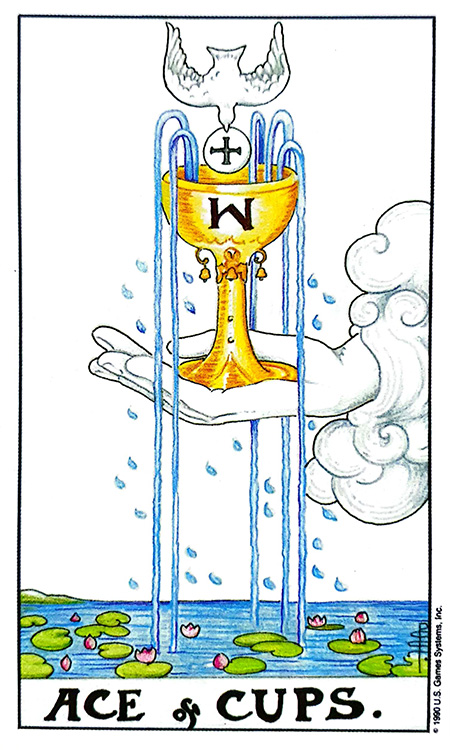
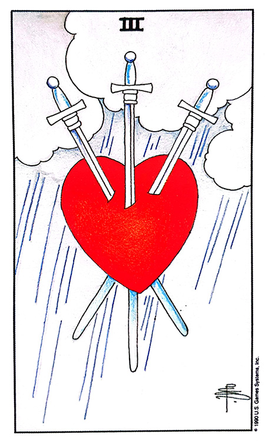
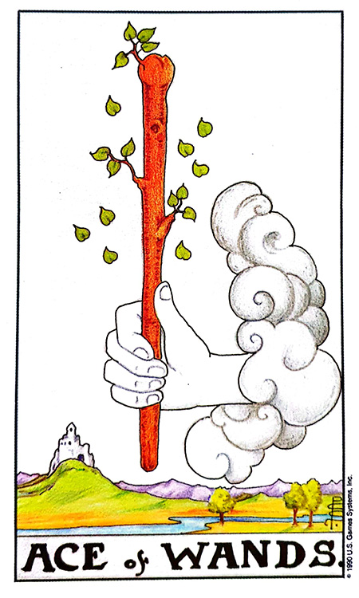
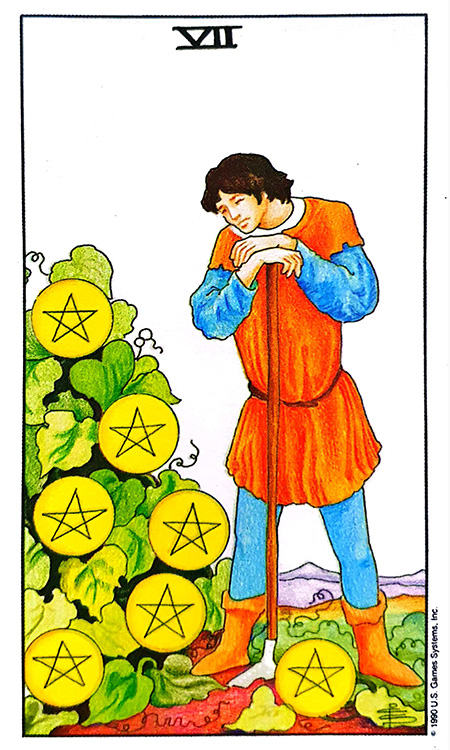

![흰색 White 카드]()
REDSUN COLOR TAROT · STUDY NOTES
쉽고 재미있는 레드썬의 컬러타로 — 챕터 10 (162~172쪽)
“ 하얀 도화지 같은 만남 ”이 챕터의 표어는 “하얀 도화지 같은 만남”입니다. 흰색은 가시광선 전체를 반사하는 색으로 모든 빛을 반사하며, 빛과 밝음을 상징합니다.
물감은 섞으면 섞을수록 검은색이 되고, 빛은 섞을수록 흰색이 됩니다. 흰색은 가시광선 전체를 반사하는 색으로 모든 빛을 반사하며 빛과 밝음을 상징합니다.
변색되지 않은 갓 내린 눈이나 흰색의 도화지처럼 흰색에는 아무것도 더해지지 않았기 때문에 이전 경험이나 영향이 없고 과거의 행동에 얽매이지 않은 무고(無辜)의 상태로서 순수함 그 자체입니다.
이 색은 순수할수록 완벽하며, 다른 것이 첨가되면 그 완벽함이 떨어집니다. 가장 궁극적인 순수의 색이며 평화로움과 편안함을 가져다주며 감정, 사고, 그리고 영혼의 내적인 정화를 도와주고 보호하는 색입니다.
우리 조상들은 백색을 말할 때 아주 희다는 뜻으로 순백(純白), 수백(秀白), 백정(白淨), 정백(精白), 때로는 선명하게 희다고 해서 선백(鮮白)이라고 표현했습니다.
색은 무채색에서 시작하여 무채색으로 끝이 납니다. 흰색과 검은색은 무채색을 대표하는데, 그런 이유에서 흰색은 시작을, 검은색은 끝을 의미합니다.
흰색의 시작은 아무것도 그려지지 않은 흰색 도화지와 같습니다. 긍정적인 것도 없지만 부정적인 것도 없습니다. 어떤 그림이 그려질지는 아직 모릅니다.
앞으로 어떤 그림이 그려지고 어떤 색으로 칠해질지는 그 사람의 노력에 달려있습니다. 검은 밤이 지나면 새로운 아침이 밝아옵니다.
흰색은 반사율이 높고 밝은 색상입니다. 깨끗할수록 색상이 더 밝게 보이는 경향이 있습니다. 얼룩·먼지·불순물은 흰색 표면에서 쉽게 볼 수 있으므로 무언가가 깨끗하지 않을 때 시각적으로 분명합니다. 그러한 이유로 연구소나 식료품 공장의 유니폼으로 사용됩니다.
의사와 간호사는 흰색 가운을 입습니다. 기록에 따르면 공식적으로 흰색 가운을 입자고 주장한 것은 20세기 초 뉴욕대학의 외과 의사였던 Dr. Mark Hochberg였다고 합니다. 20세기 중반에 이르면서 일반적인 의사들은 흰색 가운을 입었다고 합니다.
환자들은 보통 면역 수치가 떨어져 있어 세균 차단이 필요한데, 흰색은 더러운 것이 묻으면 쉽게 눈에 띄기 때문에 옷을 통한 세균 전파를 막을 수 있습니다. 또한 흰색은 생명과 부활을 상징하는 색으로서 부정적인 것들을 없애고 깨끗하게 만들어 주는 색이기에 의사의 가운으로 어울립니다.
예로부터 서양에서는 하얀 밀가루, 우유, 계란 이 세 가지 하얀 물건을 제물로 바치면 마녀와 악령을 쫓아준다는 미신이 있습니다. 『성경』에는 인간의 죄를 씻기 위해 희생의 제물로 바치는 이야기들이 있는데, 희생의 제물로 가장 많이 쓰이는 동물은 순결을 상징하는 흰 양입니다.
흰색의 빛은 공간과 여러 사람들을 밝게 비추어 줍니다. 그림을 그리는 캔버스는 언제나 흰색입니다. 흰색은 어떠한 색도 잘 표현해 주는데, 이처럼 흰색은 다른 색을 위해 희생하는 색입니다.
오래전 유럽에서는 흰색 웨딩드레스와 관련하여 순결하지 않은 여성이 흰색 웨딩드레스를 입으면 색이 변한다고 믿어, 순결함을 확인하기 위해 흰색 웨딩드레스를 입었다는 설이 있습니다.
| # | 성격 특징 |
|---|---|
| 1 | 기품이 있고 고귀한 인품의 사람입니다. |
| 2 | 엄숙함과는 다소 거리가 멀지만, 항상 완전한 것을 추구합니다. |
| 3 | 불가능한 이상을 품고 있는 경우가 많습니다. |
| 4 | 공사의 구분이 확실한 사람들이 많습니다. |
| 5 | 젊음의 색으로서 순수하고 천진한 사람입니다. |
| 6 | 나서지 않으며 조화를 이루려고 노력하는 사람입니다. |
| 7 | 진실성이 있으며 타협하지 않습니다. |
| 8 | 늘 젊게 살려고 노력하는 사람입니다. |
| 9 | 한편으로는 차갑고 냉정한 사람이기도 합니다. |
| 10 | 자만심이 강하며 동시에 고독해 하기도 합니다. |
| 11 | 상당히 가정적인 사람이기도 합니다. |
| 12 | 순수한 정신을 존중하고 심신이 건강한 사람입니다. |
| 13 | 소속된 세계의 선구자적 기질도 있습니다. |
| 14 | 신념이 투철하고 자존심이 매우 강하기 때문에 천상천하 유아독존 격인 사람입니다. |
| 15 | 도도하게 보일 수 있으며 어떤 장소에서도 주눅들지 않습니다. |
“하얀 도화지 같은 만남” — 기품·고귀·완벽 추구·진실·선구자의 이상적인 면과, 차가움·자만·고독·천상천하 유아독존·타협하지 않음의 강한 자아가 함께 존재합니다. 순수함이 도도함으로도 비칠 수 있는 이중성.
긍정적인 유니버셜 웨이트 타로와 화이트는 연애운에서 크게 세 가지 이유로 등장합니다.
| 카드 조합 | 핵심 한 줄 | 상세 해석 |
|---|---|---|
 ACE of CUPS (컵 에이스) + White |
새 사랑 · 노력에 달림 | 두 사람의 관계는 앞으로 정해진 것은 없습니다. 이것은 도화지에 그림을 어떻게 그리느냐는 두 사람의 노력에 달려있습니다. 앞으로 좋은 그림들을 그려나갈 수 있다는 점에서 좋은 색이며, 아직 채워진 게 없다는 면에서는 아쉬운 점이라 할 수 있습니다. |
 III of SWORDS (소드 3) + White |
상처와 실망만 그려짐 | 하얀 도화지에 상처와 실망만이 그려져 있습니다. 아픈 사랑으로 인해 공허한 마음만 가득하고 지금까지 만난 의미가 없습니다. (책 손글씨: “하얀색 도화지에 상처와 실망이 그려짐”) |
| 과거 자리 + White | 과거의 상처가 치유됨 | 과거 자리에 나왔을 경우 현재가 긍정적 배열의 카드들이 나왔다면 전에 사랑의 아픔이 있었는데 지금의 사람을 만나 그 아픔이 치유되는 모습으로 해석되는 경우도 있습니다. |
| 애인·재회 질문 + White | 만나기 어려움 · 재회도 난망 | “애인을 만날 수 있을까요?” 질문이라면 만나기 어려운 모습이며, 재회를 원하는 경우 등장할 수 있는데 재회가 어려운 상황입니다. |
| 카드 조합 | 핵심 한 줄 | 상세 해석 |
|---|---|---|
 ACE of WANDS (완드 에이스) + White |
텅 빈 금고 · 새 시작 | White의 금전운은 현재 상황은 아무것도 채워지지 않은 텅 빈 금고와 같습니다. 적자는 아니지만 채워지지도 않습니다. 흰색은 주로 새로운 금전 활동을 시작할 때 자주 나옵니다. 아직 미래에 금전운에 대해서 정해진 것은 없습니다. 그것은 순전히 본인의 노력에 따라서 많은 금전의 기회를 얻을 수도 있고 텅빈 금고만 가지고 있을 수도 있습니다. 시작하지 않고 행동하지 않고서는 재물은 모을 수 없습니다. 부정적인 방해 요소가 없기 때문에 긍정적인 마음으로 시작해도 좋아 보입니다. |
 VII of PENTACLES (펜타클 7) + White |
변화 필요 · 이직·전업 | 지금 하고 있는 금전 활동이 만족스럽지 않기 때문에 변화를 하고 싶어 합니다. 현재의 상황으로는 크게 이득을 남기지 못하고 있습니다. 직장이나 사업장을 옮기거나 새로운 구상을 하고 있습니다. 망설이지 말고 새롭게 도전하는 것이 좋아 보입니다. |
White 컬러만 놓고 보면 긍정적인 의미가 강하기 때문에 매매와 합격은 모두 좋습니다. 그렇지만 하얀 도화지에는 긍정적인 그림도 부정적인 그림도 그려질 수 있습니다. 그렇기 때문에 흰색은 같이 보는 유니버셜 웨이트 타로의 영향을 많이 받습니다. (Sky·Pink와 같은 계열의 원리)
| 카드 조합 | 핵심 한 줄 | 상세 해석 |
|---|---|---|
| 부정 타로 + White (매매운) |
매매 이루어지지 않음 | 매매운에서 부정적인 유니버셜 웨이트 타로와 나온다면 매매가 이루어지지 않는 모습입니다. |
| 긍정 타로 + White (매매운) |
합리적 매매 성사 | 긍정적인 유니버셜 웨이트 타로와 나온다면 매매가 적절한 선에서 이루어지는 것입니다. 크게 이득을 보지도 않고 손해도 보지 않는 합리적인 매매가 이루어집니다. |
| 유니버셜 타로 + White (합격운) |
동반 타로가 결정 | 합격운에서도 같이 보는 유니버셜 웨이트 타로의 영향을 많이 받습니다. 유니버셜 웨이트 타로에 따라 합격 · 불합격이 결정됩니다. |
사업운에서 White는 새로운 사업을 시작할 때 주로 나옵니다. 앞으로 어떻게 노력하느냐에 따라서 사업의 성패가 좌우됩니다.
이 색은 청결하고 깨끗함을 필요로 하는 직업이나 창의적인 일에 어울립니다.
| 항목 | 내용 |
|---|---|
| 기본 원칙 | 현재 건강에 문제가 있다면 완치가 될 수 있습니다 — 부활·생명의 색. |
| 긍정 타로 + White | 지금은 건강에 아무 이상이 없습니다. |
| 부정 타로 + White | 주의 질환 — 폐, 결핵, 안과 질환과 관련. |
| # | 룰 | 내용 |
|---|---|---|
| 1 | 하얀 도화지 | 긍정도 부정도 없다 · 앞으로 그려질 그림 = 본인의 노력. 잠재력의 색. |
| 2 | 연애 3대 등장 시점 | 사랑 시작 · 재회 · 전환점 — 이 세 가지 중 하나로 반드시 해석 분기. |
| 3 | 동반 타로 결정 원리 | 도화지에 어떤 그림도 그려진다 → 매매·합격은 유니버셜 타로가 판정 (Sky·Pink와 동일 계열). |
| 4 | 새 사업 · 전환점 | 사업 = 새 출발 시점 · 부정 배열 앞뒤에 White가 있으면 먹구름이 걷히는 전환. |
| 5 | 희생 · 완벽 | 다른 색을 위해 희생하는 캔버스 색 · 다른 것이 첨가되면 완벽함이 떨어짐 · 건강은 부활·완치의 색. |
| 섹션 | 핵심 명제 |
|---|---|
| 기본 | “하얀 도화지 같은 만남” · 키워드 15 — 전체·시작·탄생·웨딩·지혜·공허·죽음·부활·순수·희생·포용. |
| 유래·순수 | 빛은 섞을수록 흰색 · 물감은 섞을수록 검정 · 순백/수백/백정/정백/선백 · 성경의 어린 양(순결 번제). |
| 새로운 시작 | 무채색 = 흰=시작, 검=끝 · 마르코 폴로 타르타르 새해 흰옷 · 석가 흰코끼리 태몽 · 창세기 “빛이 있으라” · 세례. |
| 청결함 | 연구소·식품공장 유니폼 · Dr. Mark Hochberg(20C 초 뉴욕대) → 20C 중반 의사 흰 가운 표준화. |
| 희생·웨딩 | 제물 = 흰 밀가루·우유·계란·흰 양 · 캔버스는 흰색 · 1499 안느 공작 → 1840 빅토리아 여왕에서 유행 시작. |
| 성격 | 기품·완벽·진실·선구자 vs 차가움·자만·고독·천상천하 유아독존. |
| 연애 | 3대 등장 시점(시작·재회·전환) · 컵에이스+W=노력에 달림 · 소드3+W=상처만 그려진 도화지 · 애인/재회는 어려움. |
| 금전 | 완드에이스+W=텅 빈 금고, 노력하기 나름 · 펜타클7+W=변화 원함·망설이지 말고 도전. |
| 매매·합격 | W 자체는 긍정이지만 동반 타로가 결정 · 긍정=합리적 매매 / 부정=성사 안 됨. |
| 사업·진로·건강 | 사업=새 시작·전환점 · 진로=의사·간호사·연구원·웨딩·창의·미용·코디 · 건강=완치의 색, 주의=폐·결핵·안과. |